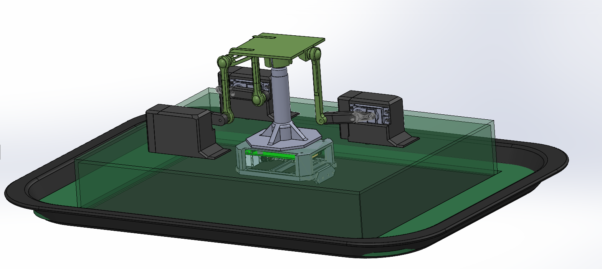

Descripción del Proyecto
Lideré el desarrollo y validación de un prototipo a escala de simulador mecánico de bote fluvial para ONIRIS-ID. Este proyecto requirió análisis exhaustivo de materiales, experimentación rigurosa y redacción de informes técnicos detallados para la validación del prototipo.
Objetivos
- Desarrollar prototipo funcional a escala
- Realizar análisis de materiales óptimos
- Validar comportamiento mecánico
- Documentar proceso técnico completo
Resultados
- Prototipo validado exitosamente
- Reducción de costos de materiales
- Informes técnicos completos
- Liderazgo del equipo de desarrollo
Reconocimiento
"Durante el proyecto trabajó con competencia técnica y liderazgo en el equipo."